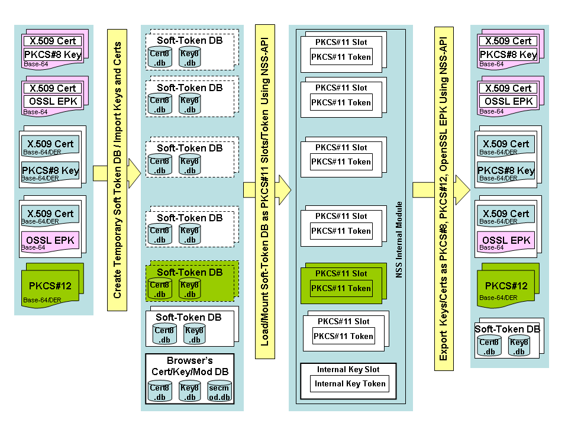
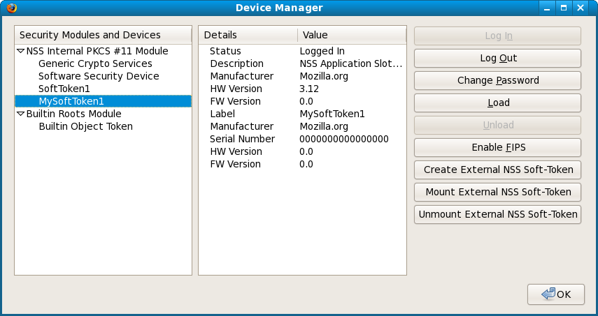
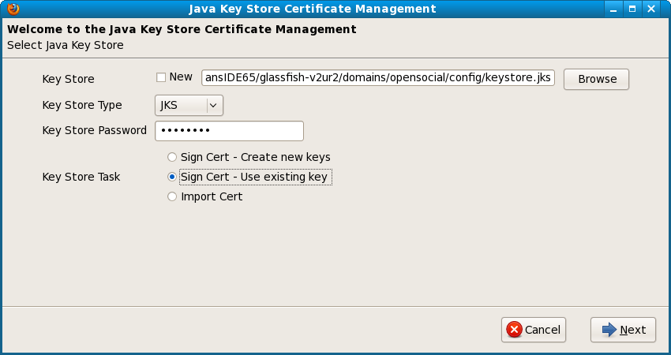

{kind=link}
 |
How to Use the Tools in Key Manager Add-On
Instructions for PKI Related Tasks
How to Use Key Manager Tool As Personal CA
KeyManager is a stand alone PKI tool for key generation and certificate enrollment. It is built on top Mozilla NSS and PSM code base of
Open Source PKI Projects. We have extended the Certificate Manager wizard
in Mozilla PSM and added the capability for key generation and SCEP based certificate enrollment. Currently, PSM allows import and export of keys but does not provide interface for local key generation. Our extension enables Mozilla PSM to act as key management tool. In addition, the tool supports signing of proxy certificates for delegation of authorities and provides XUL based GUI for signing archive files.
KeyManager tool has following features:
Generation of keys and X.509 based self-signed certificate
Generation of PKCS#10 based Certificate Signing Requests (CSR)
SCEP based Certificate enrollment with Certificate Authority
Signing of CRLs
Signing of archive files, including XPI files (like signtool in Mozilla NSS)
Signing of Proxy Certificate (RFC 3820) and other users' certificates
Signing and verification of Attribute certificates (RFC3281)
Generation of keys and certificates for OpenSSL based applications
The Key Manager tool has two components: an XPCOM IDL based component to interact with Mozilla NSS libraries (labeled as KeyManager) and XUL based component to provide GUI to the user (labeled as KM-XUL). XUL GUI component in turn is embedded within existing XUL based PSM GUI and uses the XPCOM interface of both the existing PSM components as well as the newly defined Key Manager component.
Although we could have used the NSS for Java (JSS) API for key management, we decided to implement a similar set of API using XPCOM IDL because of usability. In our first implementation, we have used JSS API for key management. But we faced number of issues that made it difficult to use JSS for the KeyManager tool. First, the JSS was not part standard Firefox distribution (version lower than 1.5) so we had to create an installer for jar files of JSS so that it is placed in the appropriate Firefox install directory or Java “ext” directory. We also had to modify the PATH and LIBRARY environment variables to add the location of the JSS shared (DLL) libraries. Finally, we had to configure Java policy file so that Java security manager allows JSS API to use the Mozilla certificate DB as key store. The Java policy file can be changed using only Java "policytool" which is difficult to find and requires expert knowledge in Java security. In order to simplify these tasks, we had to implement a custom security manager so that we can appropriate and limited permission.
In addition, NSS API does not support multiple read-write clients at the same time. Thus, the Mozilla XPCOM library could not import changes to certificate DB done using an external tool (such as JSS) while browser is still in use. As a result, the keys created using JSS API did not show up on the XPCOM based GUI unless the browser is restarted.
In order to avoid the various security related issues, we have decided to use the JavaScript which allows setting of security privileges interactively. We found that allowing permission for XPCOM API in JavaScript is much more intuitive and user friendly. We have created a set of API in XPCOM IDL for KeyManager so that we can leverage the JavaScript security configuration capabilities. These XPCOM IDL based interfaces is similar to the Java API for JSS.
XPCOM implementation of the Key Manager tool consists of a set of sub-components: KeyManager, PKCS10, SCEP. Each of these components provides their own XPCOM IDL based interface. The IDL interfaces are implemented using C++. The XPCOM components of KeyManager tool interacts with Mozilla NSS using both the XPCOM interface for PSM as well as directly with the NSS interface. The main reason for using NSS libraries directly is that Mozilla PSM exports only limited subset of functionality of NSS which in turn exports a small subset of its total capabilities as API.
The KeyManager tool GUI extends the existing certificate manager GUI Mozilla PSM. The tool adds a separate tab for managing the keys. This new tab is same as for the user certificate tab but with additional buttons for managing life-cycle of keys.
In order to support capability for key generation, we have defined a new tab, called “Your Keys”, (as shown in Figure above.) for key management and added it to existing certificate manager. The "Your Keys" tab reuses the certificate tree from the "Your Certificates" tab. This is why we always associate a self-signed certificate when we create new pair of keys so that we do not need new GUI for keys. Without a pubic key certificate, it is very difficult to list the keys using NSS API. The key management related commands are invoked using the buttons at bottom row of the "Your Keys" tab. The buttons at the top row are inherited from the user certificate management tab. The buttons at the bottom row are related to key-management and supports capabilities of the "certutil" command line tool.
All the command buttons in the "Your Keys" tab is context sensitive like buttons in other tabs. The "Generate CSR" button is active all the time and it is used to bring up Certificate Signing Request form. If this command is invoked without selecting a certificate entry, then a new key-pair is generated, and a self-signed certificate is created before generating the CSR. The "Generate Self Sign Cert" button is used to create a new key-pair and then associate a self-signed certificate. The “Export” button allows us to export the keys to an external file in PKCS#12 format (same behavior as the backup button) and the public key certificates in X.509 and PKCS#7 format. The "SCEP Client" button launches the SCEP client wizard for sending the CSR to a remote CA for enrollment. If the “Generate CSR” button is invoked without selecting any certificate entry, then the CSR form can be sent to remote CA in the using PKCS#10 CSR, or CRMF based message (like the existing KEYGEN html tag) or using the SCEP client. The "Sign (Proxy) certificate" button launches the wizard for signing CSR from other entities using the keys displayed on the “Your Keys” tab. If the public key certificate for the selected key has appropriate extensions (basic constraint, key usage etc.) for signing certificates as CA then wizard signs the certificate like any other CA. If the selected certificate does not have key usage for CA, then wizard presents the form for signing proxy certificate and automatically set the proxy certificate extension in the signed certificate.
This tool can be used to back up keys/certificates for OpenSSL based application into Mozilla NSS based Certificate database. This tool can also be used to manage life-cycle of keys/certs using the browser and then synchronize with the existing keys/certs for OpenSSL based application. This tool has following restrictions:
works for both FIPS and non-FIPS configuration of the internal module.
Imports only PBE_SHA1_3DES based encrypted private key generated by OpenSSL tools
OpenSSL tool cannot read PEM formatted OpenSSL specific private key (typically generated using 'openssl rsa' command ) generated using NSS API
The following figure describes the process that is used to mount (load) external soft-tokens (either PKCS#8 file, PKCS#12 file or soft-token DB from another application):
|
 |
The OpenSSL based application typically uses a configuration file to specify the information about the files for keys and certificates. Typically, the user has to use OpenSSL command line tool to generate keys and certificates and then specify the path to the files for keys and certificates in a configuration file to be used by the OpenSSL based application. This whole process is quite tedious and complex unless it is automated using a script. Still, the certificate enrollment process using another command line tool is quite difficult, error-prone, and requires expert level knowledge. It is even harder to configure the OpenSSL application for smart card because OpenSSL expects “key-id” of the private key instead of any information in the certificate. In addition, OpenSSL only loads the private key and expects that the associated public key certificate has to be loaded separately from a file. Since we have already automated the generation of keys and certificate enrollment in our KeyManager tool, we have added another wizard for generating the configuration files for keys and certificates used in Open SSL based applications.
The OpenSSL Key configuration tool will automatically generate the appropriate configuration file (either in PKCS#8 or PKCS#12 format), X.509 public key certificate file. There will not be any need to use command line tool available in OpenSSL for key generation. As shown in Figure 24 , this tool will let a user choose type of key he is going to use. The available options are Private Key, PKCS#12 and Engine for smart card. Depending on type of token used for the key, a user can generate files for Private Key as well as PKCS#12 format. For smart card (called engine in OpenSSL), the tool will automatically extract information for the path to PKCS11 library, and private key id and generate the off-card public key signed X.509 certificate.
Figure 25
describes the template for configuration files for OpenSSL based
applications. Each form field is mapped as an entry containing the name
and value of the filed. The
configuration file can hold more than one type of key information. The field
“KEY_FILE_TYPE” determines which key configuration, among “PRIV_ KEY”,
“PKCS_12” and “ENGINE” is going to be selected.
Typically, an application will read this file, load the key information
and then initialize the Open SSL context using the appropriate API call based on
the selected key type.
|
#
Choose from one of following: GENERIC | CURL | OPENSSL | XML TARGET_APPS
= GENERIC #
CA certificates related paths CA_FILE_PATH
= CA_FILE_FORMAT
= PEM CA_DIR_PATH
= E:/OSSL_APP_CERTS/CADIR #
Choose from one of following: EMBEDDED | PRIV_KEY | PKCS12 | ENGINE KEY_FILE_TYPE
= ENGINE #
OPENSSL Private key/Cert Parameters PRIVATE_KEY_PASSWORD_FILE_PATH
= E:/OSSL_APP_CERTS/subrata_priv_key_password.txt PRIVATE_KEY_FILE_PATH
= E:/OSSL_APP_CERTS/subrata_priv_key_base64.pk8 PRIVATE_KEY_FILE_FORMAT
= PEM PUBLIC_KEY_CERT_PATH
= E:/OSSL_APP_CERTS/subrata_x509_base64.cer PUBLIC_KEY_FILE_FORMAT
= PEM #
PKCS#12 Related Parameters PKCS12_PASSWORD_FILE_PATH
= E:/OSSL_APP_CERTS/Subrata_pkcs12_password.txt PKCS12_FILE_PATH
= E:/OSSL_APP_CERTS/subrata_pkcs12_key_der.p12 #
PKCS#11 Engine related parameters PKCS11_ENGINE_ID
= pkcs11 PKCS11_KEY_ID
= 00:45 ENGINE_PASSWORD_FILE_PATH
= E:/OSSL_APP_CERTS/engine_password.txt PKCS11_SO_PATH
= E:/OPENSC/Smart card bundle/engine_pkcs11.dll PKCS11_MODULE_PATH
= E:/OPENSC/Smart card bundle/opensc-pkcs11.dll #
Off Card Public key certificate for the private key in the smart card. PKCS11_PUBLIC_KEY_CERT_PATH = E:/OSSL_APP_CERTS/subrata_pkcs11_base64.cer |
This tool is available under "Key Manager Tool Box" menu. Alternatively, you can invoke it in the command line with chrome option) as follows:
firefox [-P "CertTester"] -chrome chrome://keymanager/content/opensslkeyconf.xul
You can also launch the OpenSSL configuration tool by typing in "chrome://keymanager/content/opensslkeyconf.xul" in the browser's location bar.
Use this link to view the GUI form of the tool for exporting smart card related key and certificate to configuration file for OpenSSL based applications.
set MOZ_NO_REMOTE=1 "C:\Program Files\Mozilla Firefox\firefox.exe" /console /P "CertTester" |
The KeyManager tool will appear as a menu-item under "KeyManager Tool Box" menu which is under "Tools" menu in the (Firefox) browser toolbar.
Launch the KeyManager tool by selecting the menu-item for "Key Manager"
Simple Certificate Enrollment Protocol (SCEP)
We have implemented a Simple Certificate Enrollment Protocol (SCEP) Client for communication with Certificate Authorities. This tool is available under "Key Manager Tool Box" menu. Alternatively, you can invoke it in the command line with chrome option) as follows:
firefox [-P "CertTester"] -chrome chrome://keymanager/content/scepClientWizard.xul
You can also launch the SCEP Client by typing in "chrome://keymanager/content/scepClientWizard..xul" in the browser's location bar.
Configuration Tool for OpenSSL-based applications
A tool for generating configuration files for keys and certificates used in OpenSSL based applications. This tool is available under "Key Manager Tool Box" menu. Alternatively, you can invoke it in the command line with chrome option) as follows:
firefox [-P "CertTester"] -chrome chrome://keymanager/content/opensslkeyconf.xul
You can also launch the OpenSSL configuration tool by typing in "chrome://keymanager/content/opensslkeyconf.xul" in the browser's location bar.
Use this link to view the GUI form of the tool for exporting smart card related key and certificate to configuration file for OpenSSL based applications.
Archive File Signing Tool
This tool for signing archive files and it is based on the signtool in Mozilla NSS. This tool is available under "Key Manager Tool Box" menu. Alternatively, you can invoke it in the command line with chrome option) as follows:
firefox [-P "CertTester"] -chrome chrome://xpsigntoolext/content/XPSignToolForm.xul
You can also launch this tool by typing in "chrome://xpsigntoolext/content/XPSignToolForm.xul" in the browser's location bar.
Attribute Certificate Generation Tool
This tool for creating signed attribute certificate. This tool is available under "Key Manager Tool Box" menu. Alternatively, you can invoke it in the command line with chrome option) as follows:
firefox [-P "CertTester"] -chrome chrome://attrcertext/content/AttrcertForm.xul
You can also launch this tool by typing in "chrome://attrcertext/content/AttrcertForm.xul" in the browser's location bar.
This document only describes some general info about using this tool. Most of the context related help messages are embedded as XUL tooltips for the various GUI elements. The tooltips are displayed when you hover the mouse pointer over a textbox, choice element, menu-list, buttons or any XUL elements.
Open Key Manager Dialog Window (Tools --> Key Manager Tool Box --> KeyManager)
Select the "Your Key" tab
Click on the "Generate Self-Signed Cert" button to open dialog window for creating self-signed certificate
Select a "pre-defined" Certificate Profile using the profile menu. Profile menu has an option for copying information from an existing certificate.
Click the "Advanced" button if you want to specify or modify the certificate extensions
Note On EC Keys:
You can not create self-signed certificate with Elliptic Curve (EC) key types. Actually, you cannot do any task with EC keys that require signing with private keys: create self-signed certificate, generate PKCS#10 CSR, enroll certificate using KEYGEN tag, enroll/renew using SCEP client, etc. The signing with EC keys is explicitly disabled in NSS modules of all Mozilla applications. For more info on this topic, please visit the following links:
https://bugzilla.mozilla.org/show_bug.cgi?id=367577
http://groups.google.com/group/mozilla.dev.tech.crypto/browse_thread/thread/bb4cb04db4c4312b
If a certificate does not already exist:
Open Key Manager Dialog Window (Tools --> Key Manager Tool Box --> KeyManager)
Make sure that no certificate is selected in the "Your Key" tab (select an org-row in the tree or click refresh button to clear selection)
Click on the "Generate CSR" button to generate key-pair and a self-signed certificate
Another dialog window will open and follow the dialog window to generate PKCS#10 CSR.
If a certificate already exists:
Open Key Manager Dialog Window (Tools --> Key Manager Tool Box --> KeyManager)
Select the "Your Key" tab
Select the desired certificate in the tab
Click on the "Generate CSR" button and follow the newly opened dialog window to generate PKCS# 10 CSR
Alternatively, you can click on the "Export" button, then select "PKCS#10" radio button in the newly opened dialog window, click OK, and finally select the file to save the generated CSR.
You can export the selected X.509 certificate and associated private key in a number of data formats as shown in the figure below:
Here are the steps that you have to follow to export Keys/certificates:
Open Key Manager Dialog Window (Tools --> Key Manager Tool Box --> KeyManager)
Select the "Your Key" tab
Select the desired certificate in the tab
Click on the "Export" button that opens the above dialog for choosing data and encoding format
The browser prompts you for "output file path" to save the exported data - select the file name and directory.
Archive sign tool provides an XUL based GUI for command line based signtool in Mozilla-NSS.
Open Archive file signing dialog window (Tools --> Key Manager Tool Box --> Archive File (XPI) Signing Tool )
Select the "Sign Archive" tab
Select the "XPI" radio button for the "Archive Type"
Select the "File" radio button for the "Input Archive File"
Click the "Browse" button to select the XPI file to be signed
Select the "Signer Certificate" using the menu item. In order to sign XPI file you must have "code signing certificate" with the associated private key in the browser's Cert-DB.
Optionally, select the Output file. If this field is empty, a file name is automatically generated
Click the "Sign" button
For a more detailed description, please view Didier Steven's article on this topic: Howto: Add a Digital Signature to a Firefox Add-on
Do "Tools" --> "Add On" to open the Add-On dialog window
Select the entry for " Key Manager" Add-On
Click on the "Options" (or Preferences) button to open Preferences dialog window
Select the "Key Manager Tool" tab to display a list of options
Check the checkbox o the right of "Enable Cert Enrollment Wizard"
Close the dialog windows
Restart Browser
You will find the "Certificate Enrollment Wizard" menu item in the "Key Manager Tool Box" menu under Tools Menu
This option allows you to mount the certificates and keys from other Mozilla Applications (Thuderbird etc) or any Mozilla NSS complaint certificate DB.
Do "Tools" --> "Add On" to open the Add-On dialog window
Select the entry for "Key Manager" Add-On
Click on the "Options" (or Preferences) button to open Preferences dialog window
Select the "Key Manager Tool" tab to display a list of options
Check the checkbox on the right of "Enable External NSS Soft-token Manager"
Close the dialog windows
Restart Browser
When you open the Device Manager dialog window (Tools --> Options (Edit --> Preferences) --> Advanced --> Encryption --> Software Security devices), and then select the "Internal PKCS#11 module" or any element under it in the device tree, the buttons for mounting the external soft-token will be displayed on the right.
|  |
Alternatively, you can open the Device Manager dialog window as follows:
Tools --> Key Manager Tool Box --> KeyManager --> "Security Devices"
This option allows you to open SSH connection in a terminal window. The SSH client uses keys directly from the browser key/cert database without any conversion.
This option is very much restricted to Linux distribution, like Fedora, that supports NSS patch for OpenSSH. You must make sure that OpenSSH client on your machine supports reading keys from NSS database.
Note: This OpenSSH client option is not supported on Windows platform.
Note: Maybe one common option for all platforms is to use NSS-patched version of nxssh (which is part of nxclient) when it is available. NX-client is available on Linux/Mac/Windows platforms.
Do "Tools" --> "Add On" to open the Add-On dialog window
Select the entry for "Key Manager" Add-On
Click on the "Options" (or Preferences) button to open Preferences dialog window
Select the "SSH Client" tab to display a list of options
Check the checkbox "Enable OpenSSH-2 Client";
Edit the 'SHELL Command Path' if your platform does not support 'bash'
Edit the 'Terminal Command Path' to your preferred terminal command; The SSH-client is tested with following terminal commands: xterm, gnome-terminal and konsole.
Edit the 'OpenSSH-2 Command Path' to path for your preferred 'openssh' executable. You must test selected openssh executable for accessing keys from NSS DB. You can use the following command to test the support for NSS in openssh : openssh -o 'usenss yes' localhost. For more info, locate and read the README.nss file which is part of the NSS-patched opnessh distribution.
Close the dialog windows
Restart Browser
You can open the OpenSSH Client dialog window either from the browser's Tools menu or from the KeyManager tool :
Tools -> Key Manager Tool Box -> OpenSSH Client
Tools -> Key Manager Tool Box -> Key Manager -> OpenSSH Client
You can also use the "Export" button of the KeyManager tool to generate public-key string used in the $HOME/.ssh/authorized_keys file on the server side.
Tools -> Key Manager Tool Box -> key Manager -> Export -> OpenSSH2 Public Key.
This option allows you to use Key Manager to sign certificates in Java key stores. The tool will allow you to select the key/certificates in Java key store using the alias and do all that is necessary to sign the certificate using the CA's key in browser's certificate DB. It will extract a PKCS#10 CSR using, then sign the certificate using Key Manager's certificate signing tool and then import back into the Java key store.
Note: This feature is only supported on Linux/Mac-OSX platforms.
Do "Tools" --> "Add On" to open the Add-On dialog window
Select the entry for "Key Manager" Add-On
Click on the "Options" (or Preferences) button to open Preferences dialog window
Select the "Key Manager Tool" tab to display a list of options
Check the checkbox for "Enable Java Keystore Cert";
Select the "JKS Manage Cert Tool" tab to display a list of options
Edit the 'SHELL Command" Path if your platform does not support 'bash'
Edit the 'JAVA_HOME' path
Edit the 'Java Version'
Note: f the SHELL and JAVA_HOME environment variable is already set, then preference will be automatically set to those values.
Open Java Key store Manger Wizard
Tools --> Key Manager Tool Box --> Manage Certs in Java Key store
Alternatively,
Toolbar for KeyManager --> Open the menu in "Security Devices" --> select the "Manage certs in JKS" menu item
Specify the key store parameter using the browse button :
"Key Store" file path (use the browse button to select an existing file or location of new file"; if you want to create new Keystore, then check the "New" checkbox and then select browse to select the location and name of the file
Key store type
Key store password
Type of task - generate a new key-pair and then sign it, sign a certificate for an existing key-pair or import X.509 certificate
|  |
The CRL signing tool overlays a set of buttons on top of browser's existing CRL Manager. The CRL signing tool provides XUL GUI for what you can do using the command-line 'crlutil' tool of Moizlla-NSS.
|
You can launch the CRL Signing tool as follows:
In that window you will see a set of buttons within a red rectangular box. These buttons can be used to create, view, modify, export and load CRLs.
The "Create" dialog will filter and present only those CA certificates that have private key in browser's Cert-DB.
The Update Manifest can be signed using our XPI signing Tool. It uses the keys/certificate from browser's certificate database. Our tool can be considered as an alternative to the Mozilla's McCoy tool which requires you to use a keystore external to browser's certificate/key DB.
The Signing of update manifest (update.rdf) file is a two-step process:
You add an "updateKey" element to the install.rdf file. The updateKey is the base-64 formatted public key of the signing certificate.
Sign the update.rdf file using the private key associated with the public-key in the updateKey element of the install.rdf file.
Open Archive file signing dialog window (Tools --> Key Manager Tool Box --> Archive File (XPI) Signing Tool )
Select the "Sign Update RDF" tab
Select the "Add/Modify Update Key" tab
Enter the path to the install.rdf file - it could be an XPI file that contains the install.rdf, a directory or file path of the install.rdf file.
Information related to the updateURL and updateKey elements will be displayed
Check the "Modify" option to add/modify the updateKey element if it the checkbox is visible
Click the
"Add Update Key" or "Modify Update Key".
Select the "Sign Update RDF" tab
Choose or enter the "Update RDF file"
Information about the "Target Apps" (i.e. Firefox, Thunderbird, etc.) will be displayed
If the Update Link URL is non-HTTPS then you have to enter the path to the XPI file for computation of the value for the "updateHash" element - the values of the updateHash element is automatically computed based on the selected Hash Algorithm or it can computed by clicking on the "Compute Hash" button
The "Singing cert" is pre-selected based on the updateKey in the install.rdf file
Click the "Sign" button - the value of the signature element will be displayed
Optionally, you click the Verify button to check the validity of the signature
More to come in future ...
Key Manager Tool Firefox Add-on: https://addons.mozilla.org/en-US/firefox/addon/4471.
Key Manager Tool – Firefox Add-on for Key Generation, Certificate Enrollment, CRL Signing and Identity and Authority Delegation, Avaya Labs Technical Report # ALR-2006-044, October 2006.
On-Demand Provisioning of Proxy Certificate for Delegating Identity to Grid-based Portals, Avaya Labs Technical Report# ALR-2007-023, July 2007.
How to Use Key Manager Tool as Personal CA, Avaya Labs Technical Report, February 2009.
|
Contact: Subrata Mazumdar |